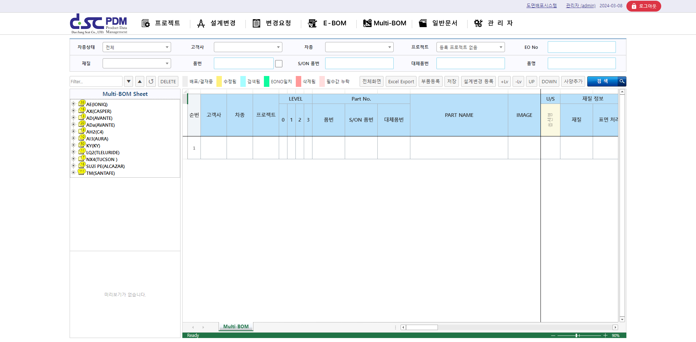
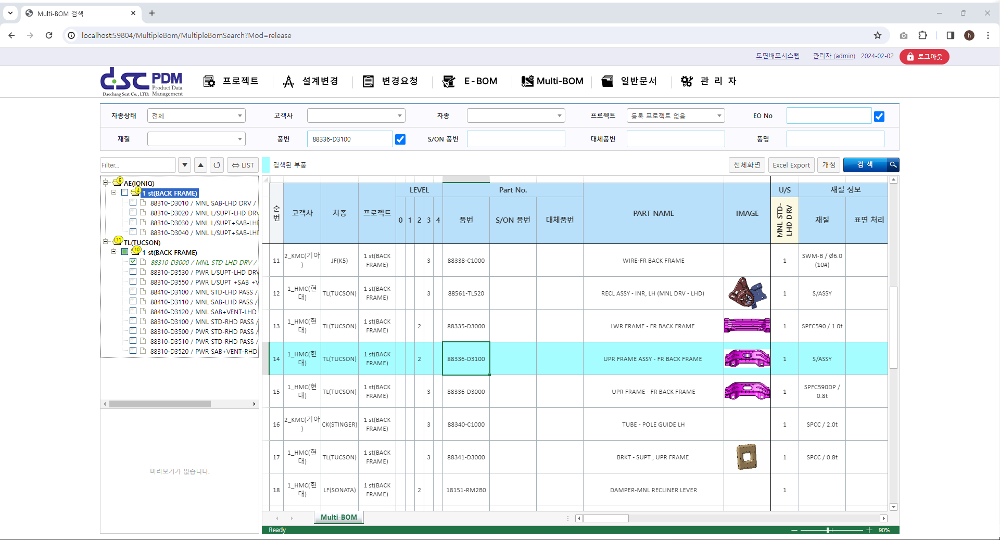
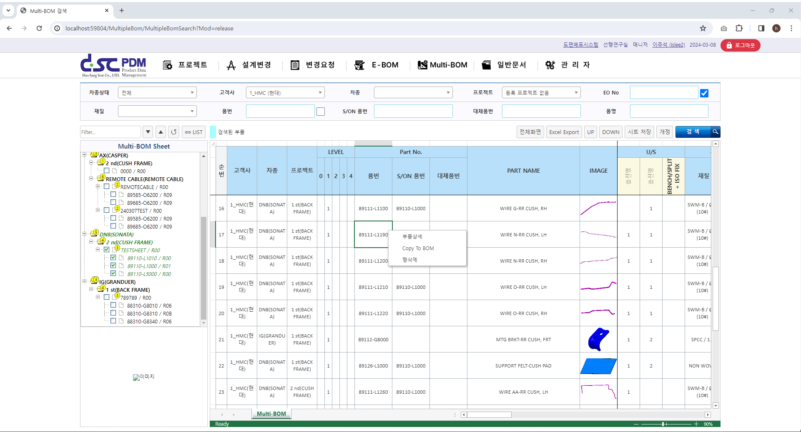
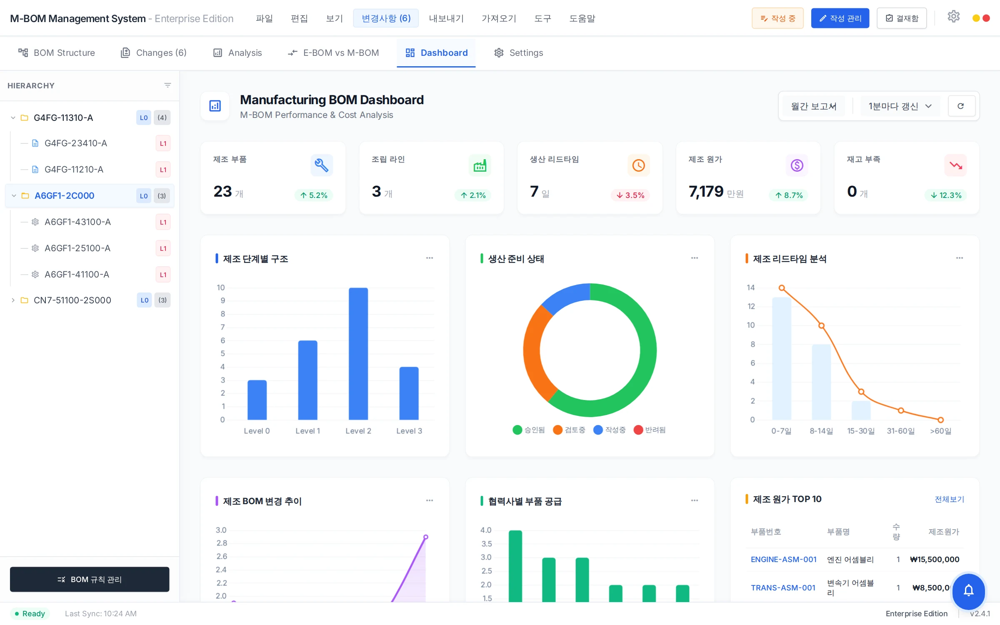

E-BOM과 M-BOM의
정합성 관리
복잡한 파생 사양을 한 눈에 비교하고 분석하세요.
자동 차이점 감지(Diff)와 시각적 비교 모드로 BOM 정합성을 검증합니다.

다사양 BOM을 하나의 플랫폼에서
생성·비교·검수·연동까지 한 번에
Multi-BOM Sheet 관리
한 차종 N개 사양을 한 번에 관리·비교.
다중 조건 스마트 검색
필요한 품목을 조건별로 빠르게 조회.
계층적 트리 구조
고객사·차종·프로젝트 계층 트리 탐색.
조립 구조 확인
제품과 부품의 관계를 구조별로 확인.
E-BOM vs M-BOM 비교
설계·제조 BOM 차이를 색상으로 즉시 식별.
ERP 업무 연결
자재·원가 검토에 필요한 연계 범위를 협의.
BOM 구조 편집부터 비교·분석까지
BOM 구조 편집, E-BOM·M-BOM 비교, 제조 대시보드 기능을 실제 운영 화면과 함께 소개합니다.
직관적인
BOM 구조 및 편집
프로젝트, 어셈블리, 단품으로 이어지는 계층 구조를 트리와 그리드 형태로 직관적으로 시각화합니다. 관련 도면과 문서를 함께 찾아 부품 검토에 활용할 수 있습니다.
- 계층적 트리 구조와 다중 뷰 지원
- 드래그 앤 드롭 BOM 편집
- 하위 부품 전개 및 썸네일 미리보기
- 빠른 검색 및 필터링 (Part No, Name)

E-BOM vs M-BOM
자동 비교 분석
서로 다른 리비전이나 기종 간의 BOM 차이점(추가, 삭제, 수량 변경)을 색상으로 하이라이트하여 즉시 식별합니다. 동기화 스크롤을 통해 대량의 데이터도 쉽게 검토할 수 있습니다.
- 변경 유형(Add/Remove/Modify) 색상 구분
- E-BOM(설계) vs M-BOM(제조) 정합성 검증
- 변경 이력 리포트 자동 생성
- 큰 BOM에서도 비교 위치를 함께 확인

제조 원가 및
공급망 분석
제조 부품 수, 조립 라인 현황, 생산 리드타임을 대시보드에서 분석합니다. 협력사별 부품 공급 현황과 제조 원가 TOP 10을 파악하여 부품 단가 차이와 변경 영향을 함께 검토합니다.
- 제조 단계별(Level) 구조 및 수량 분석
- 생산 준비 상태(승인/검토/작성) 모니터링
- 제조 원가 비중 분석 (Pareto Chart)
- 협력사별 공급 안정성 및 리드타임 추적

사양이 많아져도, 차이는 명확하게
사양별 구성과 변경 내용을 함께 확인해 BOM 검토의 부담을 줄입니다
Multi-BOM으로 사양별 BOM 관리를 시작하세요
귀사의 사양별 BOM으로 구조와 수량 차이를 확인해 보세요. 비교·변경 검토에 필요한 기능부터 시연 상담을 안내합니다.